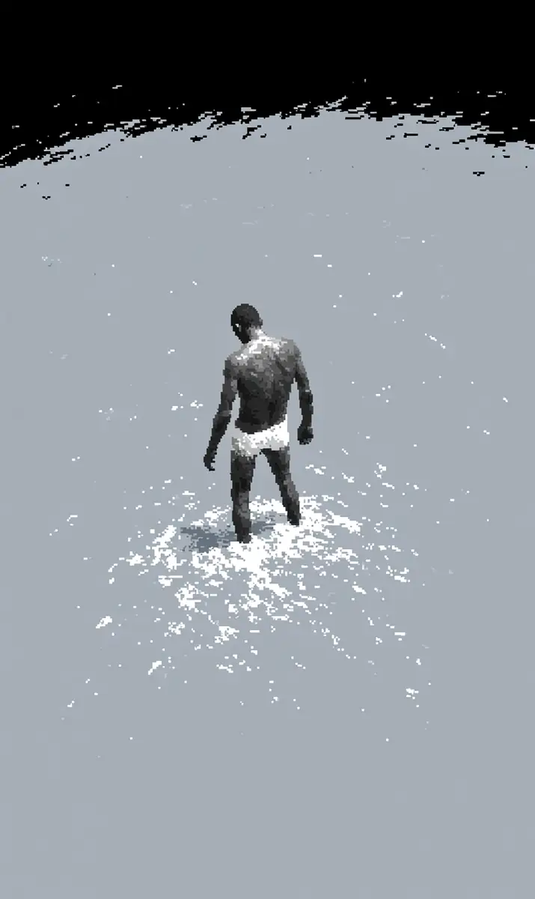

도윤은 물속으로 걸어갔다.
[Doyun walked into the water.]
물이 아주 차가웠다.
[The water was very cold.]
하늘은 회색이었다.
[The sky was grey.]
아무 소리도 없었다.
[There was no sound at all.]
그때 무언가 도윤의 다리를 툭 쳤다.
[Then something bumped Doyun’s leg.]
도윤은 아래를 봤다.
[Doyun looked down.]
작고 동그란 것이 물 위로 쏙 올라왔다.
[A small round thing popped up above the water.]
“안녕!” 그것이 말했다.
[”Hi!” it said.]
도윤은 깜짝 놀랐다.
[Doyun was startled.]
“너 이름이 뭐야?” 그것이 물었다.
[”What is your name?” it asked.]
“도윤...” 도윤이 작게 말했다.
[”Doyun...” Doyun said quietly.]
“도윤! 도윤! 좋은 이름이다!”
[”Doyun! Doyun! Good name!”]
갑자기 작은 것들이 많이 올라왔다.
[Suddenly many little things popped up.]
하나, 둘, 열, 백 마리!
[One, two, ten, a hundred of them!]
“밥 먹었어?” 하나가 물었다.
[”Did you eat?” one asked.]
“왜 여기 왔어?” 다른 것이 물었다.
[”Why did you come here?” another asked.]
도윤은 대답할 수 없었다.
[Doyun could not answer.]
작은 것들이 깔깔 웃었다.
[The little things giggled.]
“사람은 참 이상해!”
[”Humans are so strange!”]
그때 하나가 조용히 말했다.
[Then one spoke quietly.]
“도윤, 너무 멀리 오지 마.”
[”Doyun, do not come too far.”]
도윤은 물었다. “왜?”
[Doyun asked, “Why?”]
대답은 없었다.
[There was no answer.]
작은 것들이 모두 사라졌다.
[All the little things vanished.]
물은 다시 조용해졌다.
[The water became quiet again.]
도윤은 혼자 서 있었다.
[Doyun stood alone.]
발밑에서 작은 웃음소리가 들렸다.
[From under his feet, a small laugh was heard.]